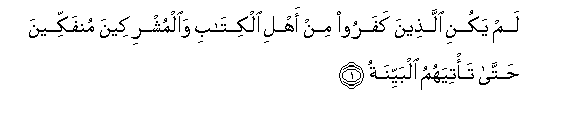
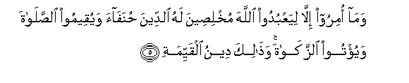
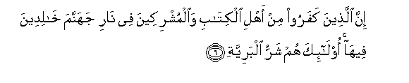
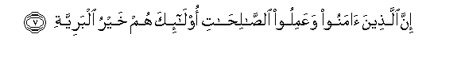
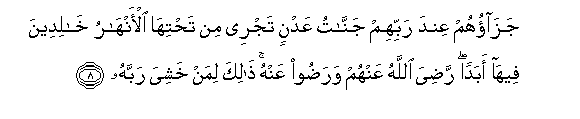

Sacred Texts Islam Index
Hypertext Qur'an Unicode Palmer Pickthall Yusuf Ali English Rodwell
Sūra XCVIII.: Baiyina, or The Clear Evidence. Index
Previous Next

The Holy Quran, tr. by Yusuf Ali, [1934], at sacred-texts.com
Sūra XCVIII.: Baiyina, or The Clear Evidence.
Section 1

1. Lam yakuni allatheena kafaroo min ahli alkitabi waalmushrikeena munfakkeena hatta ta/tiyahumu albayyinatu
1. Those who reject (Truth),
Among the People of the Book
And among the Polytheists,
Were not going to depart
(From their ways) until
There should come to them
Clear Evidence,—
2. Rasoolun mina Allahi yatloo suhufan mutahharatan
2. An apostle from God,
Rehearsing scriptures
Kept pure and holy:
3. Wherein are laws (or decrees)
Right and straight.
4. Wama tafarraqa allatheena ootoo alkitaba illa min baAAdi ma jaat-humu albayyinatu
4. Nor did the People
Of the Book
Make schisms,
Until after there came
To them Clear Evidence.

5. Wama omiroo illa liyaAAbudoo Allaha mukhliseena lahu alddeena hunafaa wayuqeemoo alssalata wayu/too alzzakata wathalika deenu alqayyimati
5. And they have been commanded
No more than this:
To worship God,
Offering Him sincere devotion,
Being True (in faith);
To establish regular Prayer;
And to practise regular Charity;
And that is the Religion
Right and Straight.

6. Inna allatheena kafaroo min ahli alkitabi waalmushrikeena fee nari jahannama khalideena feeha ola-ika hum sharru albariyyati
6. Those who reject (Truth),
Among the People of the Book
And among the Polytheists,
Will be in hell-fire,
To dwell therein (for aye).
They are the worst
Of creatures.

7. Inna allatheena amanoo waAAamiloo alssalihati ola-ika hum khayru albariyyati
7. Those who have faith
And do righteous deeds,—
They are the best
Of creatures.

8. Jazaohum AAinda rabbihim jannatu AAadnin tajree min tahtiha al-anharu khalideena feeha abadan radiya Allahu AAanhum waradoo AAanhu thalika liman khashiya rabbahu
8. Their reward is with God:
Gardens of Eternity,
Beneath which rivers flow;
They will dwell therein
For ever; God well pleased
With them, and they with Him;
All this for such as
Fear their Lord and Cherisher.